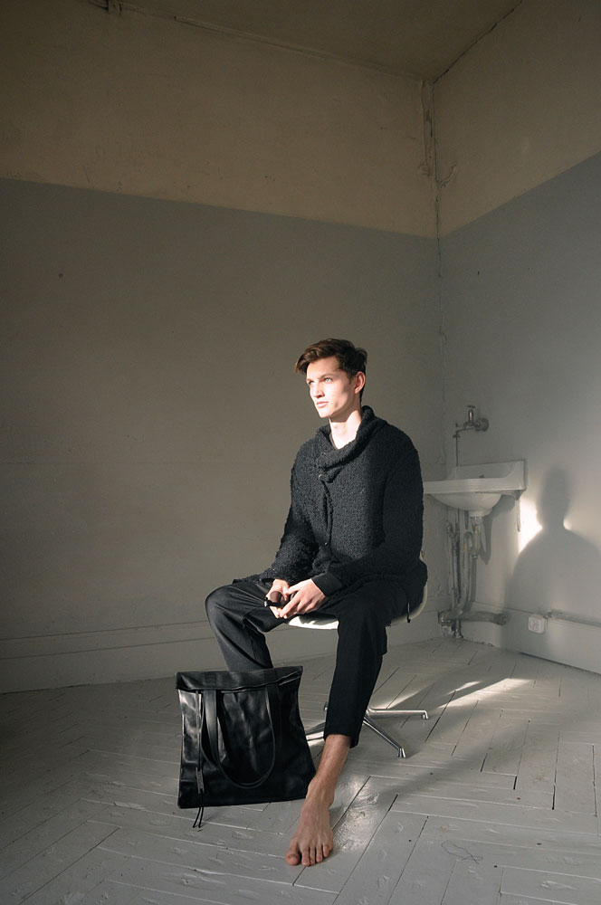
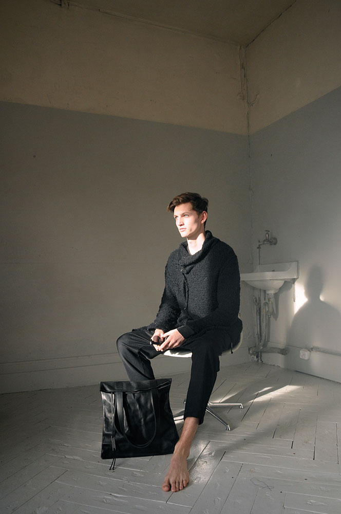
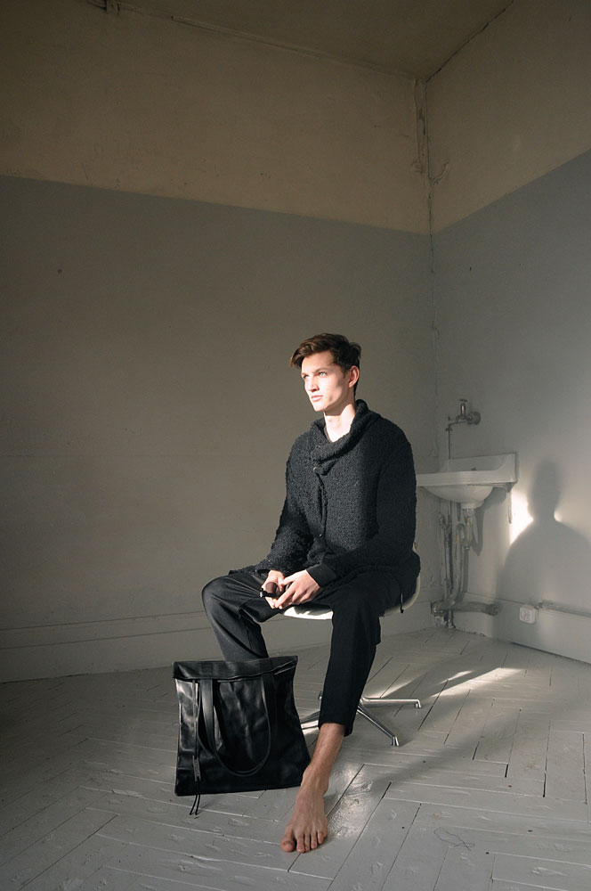
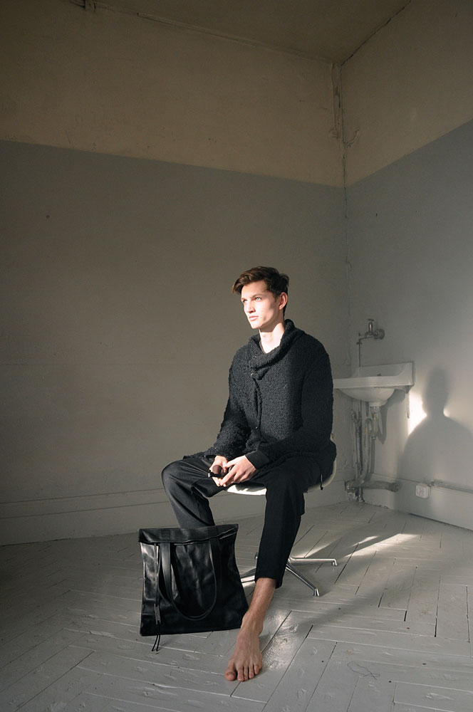

KALK, an open minded project for material art- and objects of use.
Diversity of phases already done:


 



KALK, an open minded project for material art- and objects of use.
Diversity of phases already done:
P000
THE BIRTH
Collection: Kalk
Model: Henry Rausch, Laura Prim
Photography: Ramona Gschwend, Juri Roemmel
/08
P000
CFT
Location: Lokremise St.Gallen
Photography Cash for Trash, Ladina Bischof
/04
P001
THE MOON
Collection: Kalk, Kalk by Elea Zena
Model: Henry Rausch, Maximilian Bungarten
Photography: Stefan Indlekofer
/20


P001
POP-UP
Location: Ribaux Antiquariat St.Gallen
Photography: Marie Longeville, Kim Schläpfer
/17

C000
SCISSOR CASE
Collection: Kalk
Customer: Intercoiffeur Baettig, Patrik Güntensperger
/02
P002
UNKNOWN
Collection: Kalk, Dinamo Typefoundry x Kalk
Photography: Ramona Gschwend, Juri Roemmel
/2
Kalk is an open-minded project for material art and objects of use.
Created by Ramona Gschwend (Polydesign 3D) and Juri Roemmel (Graphic Designer) in early 2015, Kalk is a platform for creative output. Under the KALK label, artists and artisans work together on projects spanning different areas
of object creation, focusing mostly on fashion, design, and object of use.
Kalk believes in exploring the materiality of objects, often working with raw and almost unprocessed materials. The process and experience of designing and creating an object is as important to KALK as the final product itself.
All products are handmade in Switzerland. Fabrics and and other materials are sourced from Switzerland or Europe.
Follow us on Instagram: Ramona Gschwend, Juri Roemmel
Code: Kim Schläpfer
Copyrights © All rights reserved.
Kalk is an open-minded project for material art and objects of use.
Created by Ramona Gschwend (Polydesign 3D) and Juri Roemmel (Graphic Designer) in early 2015, Kalk is a platform for creative output. Under the KALK label, artists and artisans work together on projects spanning different areas
of object creation, focusing mostly on fashion, design, and object of use.
Kalk believes in exploring the materiality of objects, often working with raw and almost unprocessed materials. The process and experience of designing and creating an object is as important to KALK as the final product itself.
All products are handmade in Switzerland. Fabrics and and other materials are sourced from Switzerland or Europe.
Follow us on Instagram: Ramona Gschwend, Juri Roemmel
Code: Kim Schläpfer
Copyrights © All rights reserved.